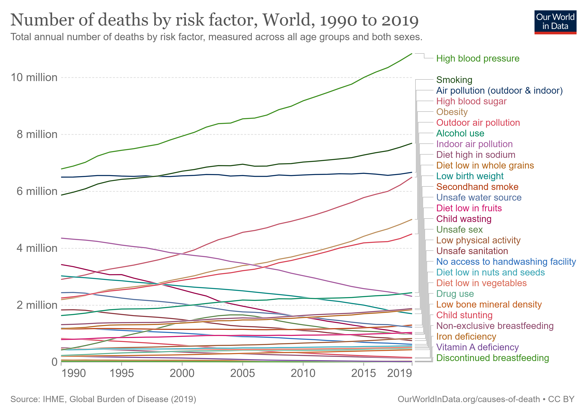

About Me
I build and operationalize intelligent systems that connect machine learning, security, and business impact. I’m especially interested in how applied AI can strengthen cybersecurity, automate analysis, and improve decision-making.
- M.S. in Computer Science (AI/ML) — Georgia Institute of Technology
- B.S. in Cognitive Science / Computer Science — UCLA • Coursework at UCLA Anderson School of Management (Finance & Strategy)
- Born in Tel Aviv, raised in California — bridging Israeli innovation with global markets
- Speak English (native), Hebrew, Portuguese, Russian, Spanish, Farsi, and Italian
- Passionate about AI-driven cybersecurity, intelligent automation, and international tech ecosystems
Connect
Featured Projects
AI Phishing Detector
Autonomous phishing-detection system powered by Claude 4 + MCP, Gmail API, VirusTotal, and n8n orchestration. Uses an AI agent to autonomously analyze, triage, and classify sophisticated phishing emails in real time.
Read Case Study →NLP Climate Change Sentiment Analysis

Analyzed 100,000 tweets on climate change using BERT for multilingual sentiment classification. Revealed polarization in climate discourse through data cleaning, tokenization, and visualization.
Read Project →Predicting Water Potability Using Machine Learning
Classified water as potable vs. non-potable using Decision Trees and Random Forests on Kaggle data. Compared imputation and balancing techniques to identify key chemical predictors of potability.
Read Project →Monte Carlo Simulation of Blackjack

Simulated 1M Blackjack games to find optimal hit strategies via Monte Carlo methods in Python. Visualized player/dealer distributions and found hitting on 15–16 yields the most balanced win rates.
View on GitHub →Professional Experience Summary
AI/ML Engineer and product-minded technologist with experience across machine learning, data engineering, and full-stack development in startups, enterprise environments, and research labs. I design and build systems that turn data into intelligent, scalable products.
I’ve helped teams integrate advanced AI models, automate data workflows, and deploy ML-driven features used in real-world applications. My work bridges technical depth with business impact — from developing ML pipelines to collaborating with product and engineering teams on AI solutions.
- Built and deployed end-to-end ML and data pipelines in Python, AWS, and n8n
- Integrated foundation models (Claude, Whisper) for automation and speech analysis
- Led applied ML efforts in cybersecurity, mobility, and telecommunications
- Delivered projects combining machine learning, cloud systems, and data visualization
- Managed cross-functional collaboration between engineering, product, and data teams to deploy ML-driven features
- Built and optimized real-time ETL, data visualization, and model evaluation pipelines
- Contributed to projects spanning cybersecurity, telecommunications, mobility, and biomedical research